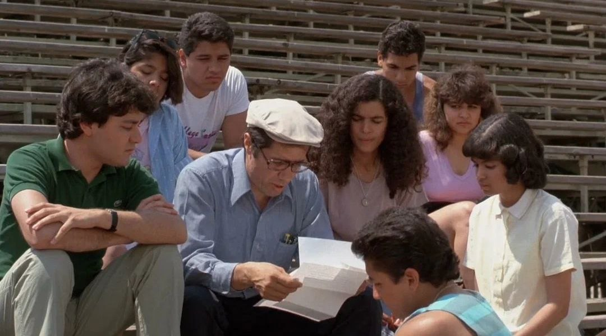
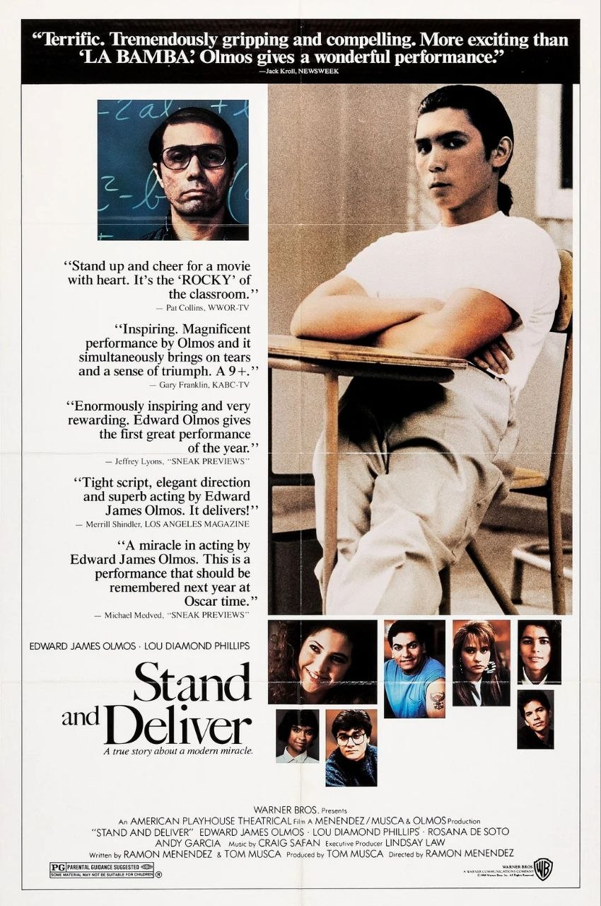
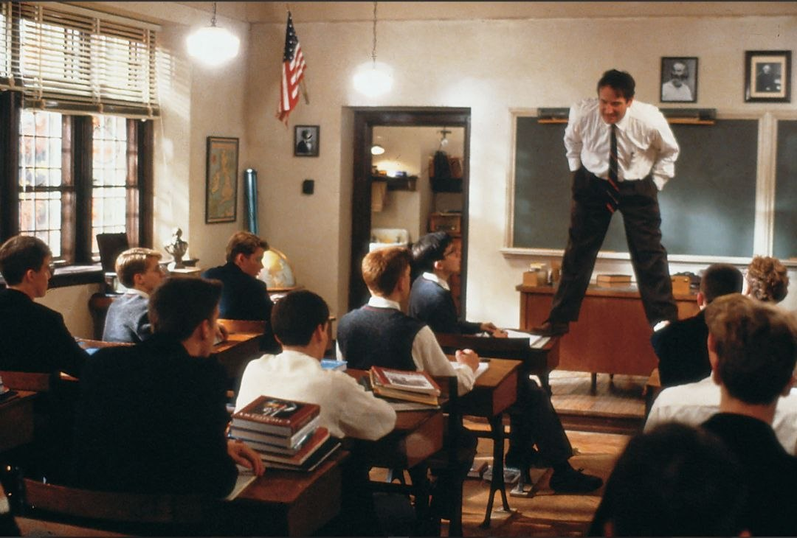
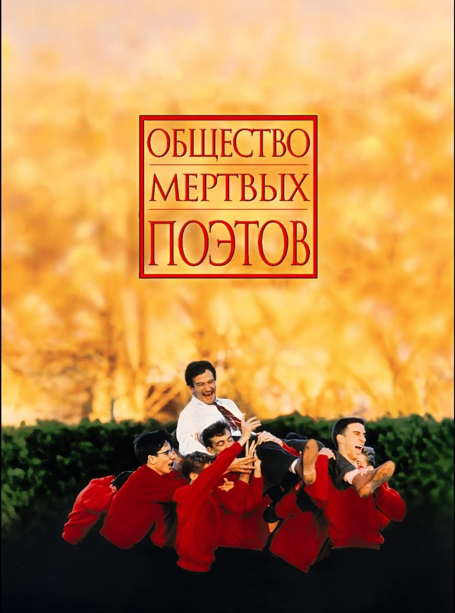
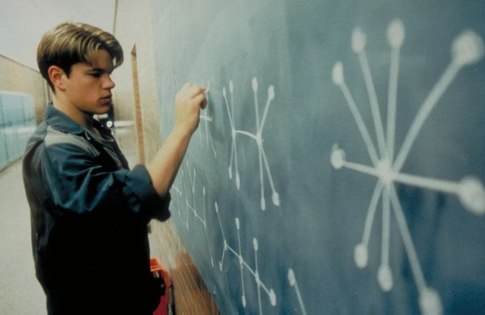
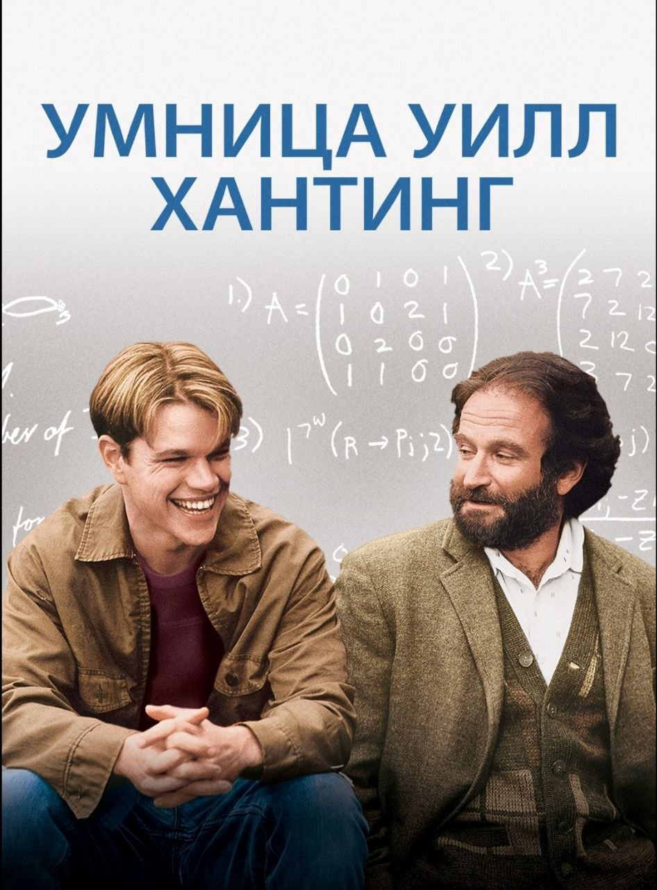
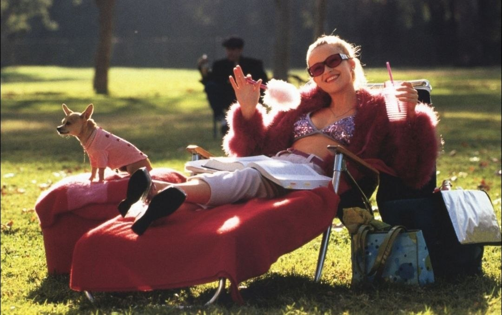
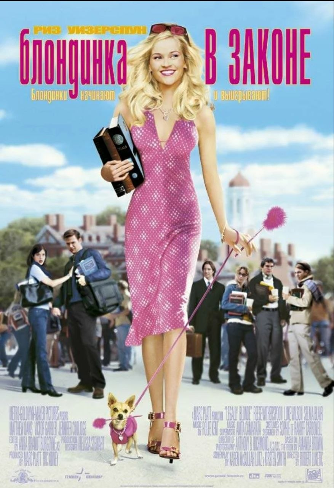
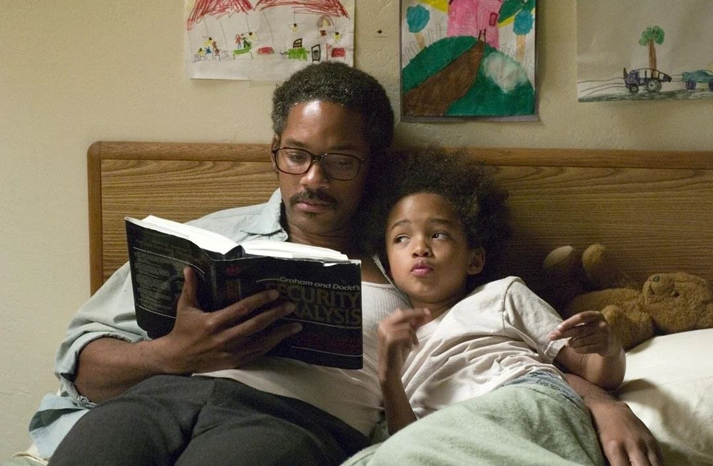
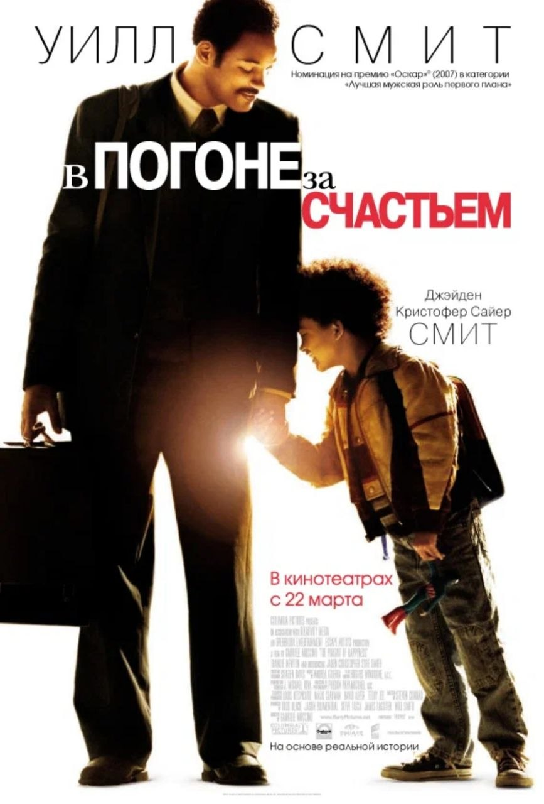

Жизнь как сценарий
5 фильмов, которые помогут настроиться на экзамены
Готовиться к экзаменам — это битва не с учебниками, а со страхом, прокрастинацией и сомнениями. Эти фильмы — ваша личная мотивационная аптечка.
-
1.выстоять и добиться


Выстоять и добиться
Stand and Deliver
8.0 1988 Драма США
Длительность: 1 ч 43 мин
Режиссер: Рамон Менендес
Актеры: Эдвард Джеймс Олмос, Эстель Харрис, Марк Элиот
Учитель математики в неблагополучной школе Лос-Анджелеса бросает вызов системе и готовит своих учеников к сдаче экзамена по высшей математике. Несмотря на насмешки и обвинения в списывании, его студенты доказывают, что упорство сильнее предрассудков.
Фильм наглядно показывает: даже если от тебя никто ничего не ждёт, а времени в обрез, концентрация и вера в себя творят чудеса.
-
2.общество мёртвых поэтов


Общество мёртвых поэтов
Dead Poets Society
8.2 1989 Драма США
Длительность: 2 ч 8 мин
Режиссер: Питер Уир
Актеры: Робин Уильямс, Роберт Шон Леонард, Итан Хоук
В элитной академии с вековыми традициями появляется учитель литературы, который учит ребят «ловить момент» и искать свой собственный голос.
Лучшее кино для тех, кто боится не оправдать ожидания родителей или зубрит нелюбимый предмет «для корочки». Фильм возвращает ощущение, что учёба — это не обязанность, а возможность стать собой.
-
3.умница уилл хантинг


Умница Уилл Хантинг
Good Will Hunting
8.1 1997 Драма, мелодрама США
Длительность: 2 ч 6 мин
Режиссер: Гас Ван Сент
Актеры: Мэтт Дэймон, Робин Уильямс, Бен Аффлек
Молодой уборщик из Бостона с гениальным математическим умом боится своего потенциала. Он решает любые задачи, но боится шагнуть в новую жизнь.
Идеальный фильм о синдроме самозванца. Уилл доказывает: даже самый высокий IQ бесполезен, если ты не веришь в себя и не меняешься.
-
Понравился материал? Вы можете поддержать автора монеткой
Поддержать КиноГид -
4.блондинка в законе


Блондинка в законе
Legally Blonde
6.8 2001 Комедия, мелодрама США
Длительность: 1 ч 36 мин
Режиссер: Роберт Лукетич
Актеры: Риз Уизерспун, Люк Уилсон, Сельма Блэр
Вопреки стереотипам, гламурная блондинка поступает в Гарвардскую школу права и с блеском доказывает, что красота и ум не исключают друг друга.
Гимн «софт скиллс» (мягких навыков). Эль Вудс побеждает не заучиванием кодексов, а нестандартным мышлением и харизмой.
-
5.в погоне за счастьем


В погоне за счастьем
The Pursuit of Happyness
8.3 2006 Драма, биография США
Длительность: 1 ч 57 мин
Режиссер: Габриэле Муччино
Актеры: Уилл Смит, Джейден Смит, Тандиве Ньютон
Бездомный отец-одиночка проходит неоплачиваемую стажировку в брокерской компании. У него нет крыши над головой, но есть цель.
Фильм учит не жаловаться и не искать оправданий. Просто решай задачу здесь и сейчас, даже если кажется, что мир рухнул.
Поделитесь своим мнением о материале или предложите фильм для следующего разбора!